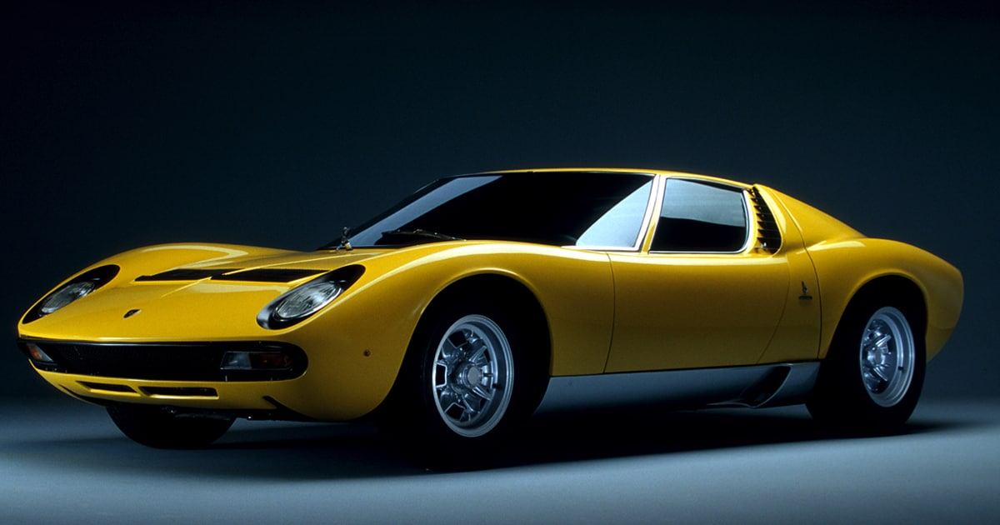
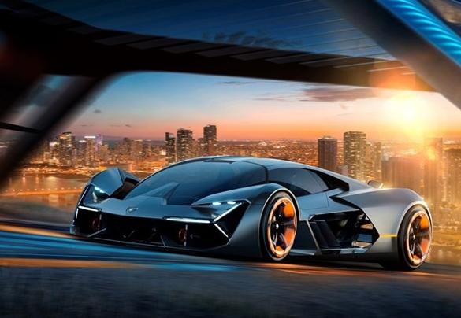

El Lamborghini Huracán es un automóvil deportivo de alto rendimiento producido por la casa italiana Lamborghini, es el sucesor del Lamborghini Gallardo. La empresa matriz es el Grupo Volkswagen. La primera versión que se presenta es el Lamborghini Huracán LP 610-4, presenta un motor V10 de 5.2 L con 610 CV colocado en posición central posterior con un sistema de tracción integral. Su par máximo de 560 Nm a 6.500 vueltas, mientras que la relación peso potencia es de 2,33 kg por caballo de fuerza. Posee una caja de doble embrague con siete velocidades. Su plataforma combina la tecnología de fibra de carbono de Lamborghini con elementos de aluminio, lo que deja el peso del coche en 1,422 kilogramos. Un Ferrari 458 Italia pesa 1.380 kilogramos (El Huracán tiene dos cilindros más y cuenta con tracción integral). El McLaren MP4-12C pesa 1350 kg, teniendo un chasis completamente fabricado en fibra de carbono y un motor más pequeño, contando solo con tracción trasera.Su velocidad máxima es de 345 km/h (estimada por Lamborghini, pero probablemente bajo ciertas condiciones sobrepase esa cifra), acelerando de 0 a 100 km/h en 3,2 segundos y de 0 a 200 km/h en 9,8 segundos. La velocidad máxima del Huracán es más de 345 km/h (207,95 mph). Puede acelerar de 0 a 100 km/h (62 mph) en 3,2 segundos y de 0 a 200 km/h (124 mph) en 9.3 segundos. Con un peso en seco de 1.422 kg (3.135 libras), el Huracán tiene una relación potencia-peso de 2,36 kg (5,2 libras) por caballo de fuerza. El Huracán controla electrónicamente todas las ruedas motrices, que tiene como objetivo aumentar la tracción en diversas superficies y el rendimiento general del coche.
Terzo Millenio
El Lamborghini Terzo Millennio es un automóvil eléctrico fabricado por Lamborghini, el cual da una idea de como será el futuro Lamborghini totalmente eléctrico. Se aprecia simplemente impresionante, como debe ser un estudio de diseño que no llegará a la etapa de producción en serie, pero que aporta las bases para construir un futuro superderportivo verde de la casa de Sant'Agata Bolognese. Lamborghini Terzo Millennio denota el ADN de la marca a cada milímetro de su carrocería, muy similar al del Lamborghini Centenario LP-770, aunque con claras líneas más futuristas. Lamborghini Terzo Millennio cuenta con tecnología de punta que fue desarrollada por la propia casa italiana, Dinca Research Lab del Massachusetts Institute of Technology (MIT) y el Mechanosynthesis Group del departamento de ingeniería mecánica. Este modelo permitirá explorar el futuro del almacenamiento de energía, los materiales, la propulsión y el diseño. Parte de esa labor conlleva investigar cómo se pueden fabricar mejores estructuras de fibra de carbono e incluso ir un paso más allá, encontrando la forma para que estas estructuras “se reparen solas”. El atractivo diseño del Lamborghini Terzo Millennio está, de acuerdo con las propias palabras de la marca: “totalmente dedicado al perfeccionamiento del flujo de aire”.Este super deportivo ecológico se impulsa gracias a cuatro motores eléctricos (uno colocado en cada rueda). No obstante, en lugar de obtener su energía de baterías convencionales, Lamborghini Terzo Millennio usa super condensadores más ligeros. La marca italiana confía que en el futuro, este auto sea capaz de entregar grandes cantidades de energía y que incluya un frenado regenerativo de gran capacidad, suficiente para que los super condensadores continúen alimentando los motores incluso mientras se recargan. Asimismo, desean asegurar que su autonomía no se vea afectada por la cantidad de veces que hay que cargar el coche.